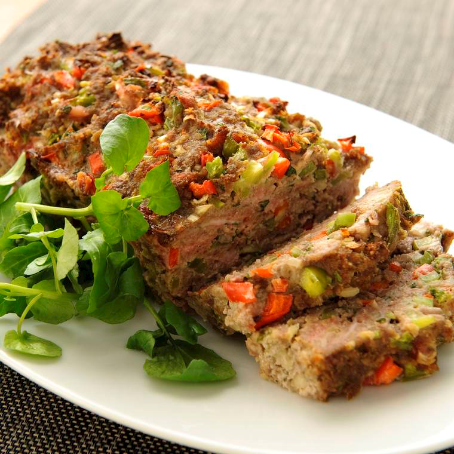

<!DOCTYPE html>
<html>
    <head>
    <title>Gold Source Code</title>
    <link rel="stylesheet" href="styles.css">
    <!-- <script type="text/javascript" src="AllScripts.js" async></script> -->
    <link rel="preconnect" href="https://fonts.googleapis.com">
    <link rel="preconnect" href="https://fonts.gstatic.com" crossorigin>
    <link href="https://fonts.googleapis.com/css2?family=Roboto:wght@500&display=swap" rel="stylesheet">
    </head>
</html>
<body>
    <!-- Header -->
    <h1 id = 'Header'>GEHAKTBROOD</h1>
    <!-- Paragraph 1 -->
    <div id="Paragraph1"><div id="Paragraph1Text">Dit gehakt brood is prima bij een avondmaaltijd, maar is ook een makkelijk gerecht voor een buffet.</div>
    <!-- Header 2 -->
    <br>
    <div id="Title2"><div id="Title2Text">Ingredienten</div>
    <!-- List -->
    <div id="Ingredients">
    <ol>
        <li>1 rode paprika</li>
        <li>1 groene paprika</li>
        <li>1 ui</li>
        <li>2 tenen knoflook</li>
        <li>50 gram bacon</li>
        <li>1/2 bosje peterselie</li>
        <li>400 gram mager rundergehakt</li>
        <li>50 gram paneermeel</li>
        <li>1 ei</li>
        <li>1 blikje tomatenpuree</li>
        <li>1 theelepel tabasco</li>
        <li>peper</li>
    </ol>
    </div>
    <!-- Header 3 -->
    <br>
    <div id="Title3"><div id="Title3Text">Bereidingswijze</div>
    <!-- List -->
    <div id="Steps">
    <ol>
        <li>Warm de oven voor op 175 graden Celsius.</li>
        <li>Maak de paprika's schoon en snijd ze in kleine stukjes. Maak de ui schoon en snijd deze fijn. Maak de knoflook schoon. Snijd de bacon in dunne reepjes. Hak de peterselie fijn.</li>
        <li>Doe het gehakt, paprika, ui, bacon, peterselie, paneermeel, ei, tomatenpuree, tabasco en peper in een kom. Pers de tenen knoflook erboven uit en kneed goed totdat alle ingredienten zijn gemengd.</li>
        <li>Druk het mengsel in een cakevorm en bak deze ongeveer 1 uur in de oven.</li>
        <li>Haal de vorm uit de oven. Laat even afkoelen en haal het daarna uit de vorm. Serveer het gehaktbrood op een schotel.</li>
    </ol>
    </div>
    <!-- Image -->
    <div i="Loaf">
        
    </div>
</body>